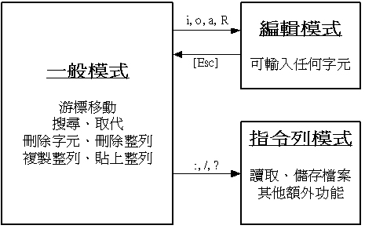
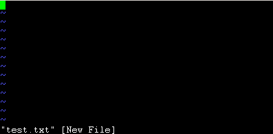
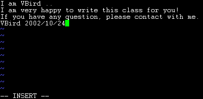
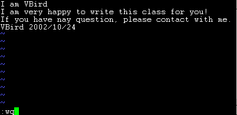

| 一个系统管理员至少应该要熟悉一种字处理软件，以方便未来的系统管理，包括系统设定与架站时候的参数设定档修订等等工作之进行。在 Unix-Like 系统中，肯定看的到的文书编辑器就是 vi 啦，他算是最正规的文字接口下的文书处理器了。为什么文书处理器很重要呢？还记得前两个章节中我们提到的 /etc/fstab 这个档案吗？您如果想要修改他的话，要如何修改呢？当然是使用文书编辑器来编辑他��，那么在 Linux 的指令列模式当中使用什么文书编辑器呢呢？当然几乎就是 vi 啦！此外，后续的 shell scripts 章节与 Linux 架站设定的档案等等，几乎都是使用他来进行设定耶！那 vi 重不重要呢？你猜猜? |
由前面一路走来，我们一直建议使用文字模式来处理 Linux 的系统设定问题，因为不但可以让您比较容易了解到 Linux 的运作状况，也比较容易了解整个设定的基本精神，更能『保证』您的修改可以顺利的被运作 ( 这里要再次的强调，不同的 Linux distribution 各有其不同的附加软件，例如 Red Hat 的 userconf, Linuxconf, ntsysv 与 setup 等等，而 Caldera 则有 COAS 等等，因此，如果您只会使用此种类型的软件来控制您的 Linux 系统时，当接管不同的 Linux distribution 时，呵呵！那可就苦恼了！ ) 所以，在 Linux 的系统中使用文字编辑器来编辑您的 Linux 参数设定档，嗯！可是一件很重要的事情呦！所以说嘛！系统管理员至少应该要熟悉一种文书处理器的！由 Linux是什么 介绍中，我们知道 Linux 与 Unix 系统中的参数文件几乎都是 ASCII 码的『纯文字』文件！因此，利用简单的文字编辑软件就可以马上修改 Linux 的参数档��！然而，与 Windows 不同的是，如果您用惯了 Microsoft Word 或 Corel Wordperfect 的话，那么除了 Xwindows 里面的编辑程序(如 xemacs )用起来尚可应付外，于 Linux 的文字模式下，会觉得档案编辑程序都没有 Windows 程序那么方便。( 注：什么是 ASCII 的纯文本文件呢？说穿了，就是您开启的档案可以将内容给您看到的档案，而不是呈现乱码的档案，那就是纯文字文件了！当您以 Windows 的 word 存一个档案时，在 DOS 的情况下使用 type ，嗯！完全不知到内容是什么？因为会出现很多的乱码，那并非是纯文字文件，而如果以 word 在存盘时，选择『纯文字类型』，嗯！那就可以使用 type 看到该档案的内容了！总之，纯文字文件相当的容易修改就是了！ )
无论如何，要管理好 Linux 系统，纯文字的手工设定仍然是需要的！所以请您千万不要嫌麻烦，努力的将下文参详一下吧！以下我们以最常见到的 vi 这套文书软件来介绍 Linux 底下的文书编辑动作。 ( 注： vi 是 Unix 预设的文字处理软件，当然，也是 Linux 预设的文字处理软件！ )
基本上 vi 共分为三种模式，分别是『一般模式』、『编辑模式』与『指令列命令模式』三种！
- 一般模式：以 vi 处理一个档案的时后，一进入该档案就是一般模式了。在这个模式中，你可以使用『上下左右』按键来移动光标，您可以使用『删除字符』或『删除整行』来处理档案内容，也可以使用『复制、贴上』来处理您的文件数据。
- 编辑模式：在一般模式中可以处理删除、复制、贴上等等的动作，但是却无法编辑的！要等到您按下『i, I, o, O, a, A, r, R』等字母之后才会进入编辑模式。注意了！通常在 Linux 中，按下上述的字母时，在画面的左下方会出现『 INSERT 或 REPLACE 』的字样，才可以输入任何字来输入到您的档案中！而如果要回到一般模式时，则必须要按下『Esc』这个按键即可退出编辑模式。
简单的说，我们可以将这三个模式想成底下的图标来表示之：
- 指令列命令模式：在一般模式当中，输入『 : 或 / 』就可以将光标移动到最底下那一行，在这个模式当中，可以提供您『搜寻资料』的动作，而读取、存盘、大量取代字符、离开 vi 、显示行号 等等的动作则是在此模式中达成的！
 闲话不多说，我们底下以一个简单的例子来进行说明吧！
我们怎么使用 vi 建立一个档名为 test.txt 的资料呢？也是很简单的啦，
- 使用 vi 进入一般模式；
直接输入『 vi 档名』即可进入 vi 了！如下图所示，左下角还会显示这个档案目前的状态！如果是新建档案会显示 [New File]，如果是以存在的档案，则会显示目前的文件名、行数与字符数，例如：『"/etc/man.config" 145L, 4614C』
[root @test root]# vi test.txt

- 按下 i 进入编辑模式，开始编辑文字；
在一般模式之中，只要按下 I, o, a 等字符，就可以进入编辑模式了！在编辑模式当中，您可以发现在左下角会出现 �CINSERT- 的画面，那就是可以输入任意字符的提示��！这个时候，键盘上除了 [Esc] 这个按键之外，其它的按键都可以视作为一般的输入按钮了，所以您可以进行任何的编辑��！（注：在 vi 里面， [tab] 这个按钮所得到的结果与空格符所得到的结果是不一样的，特别强调一下！）

- 按下 [ESC] 按钮回到一般模式；
好了，假设我已经按照上面的样式给他编辑完毕了，那么应该要如何退出呢？是的！没错！就是给他按下 [Esc] 这个按钮即可！马上你就会发现画面左下角的 �C INSERT �C 不见了！
- 在一般模式中按下 :wq 储存后离开 vi ！
OK，我们要存档了，存盘并离开的指令很简单，输入『:wq』即可存档离开！（注意了，按下 : 该光标就会移动到最底下一行去！）这时你在提示字符后面输入『 ls -l 』即可看到我们刚刚建立的 test.txt 档案啦！整个图示有点像底下这样：

如此一来，您的档案 test.txt 就已经建立起来��！很简单吧！需要注意的是，如果您的档案权限不对，例如为 -r--r--r-- 时，那么可能会无法写入，那么可以使用『强制写入』的方式吗？可以！使用『:wq!』多加一个惊叹号即可！不过，需要特别注意呦！那个是在『您的权限可以改变』的情况下才能成立的！关于权限的概念，请参考一下 Linux 的档案权限概念 ��！
如前所述，所谓的命令列或命令模式，就是在最下面一行没有显示『--INSERT--』或者『--REPLACE--』字样的时候。通常在命令列中的指令有下面几种：（注意，当按下『:』 时，光标会自动移动到屏幕的最下面一行！）
一般模式： 移动光标 h 或 向左方向键 光标向左移动一个字符 j 或 向下方向键 光标向下移动一个字符 k 或 向上方向键 光标向上移动一个字符 l 或 向右方向键 光标向右移动一个字符 [Ctrl] + [f] 屏幕『向前』移动一页（常用） [Ctrl] + [b] 屏幕『向后』移动一页（常用） [Ctrl] + [d] 屏幕『向前』移动半页 [Ctrl] + [u] 屏幕『向后』移动半页 + 光标移动到非空格符的下一列 - 光标移动到非空格符的上一列 n<space> 按下数字后再按空格键，光标会向右移动这一行的 n 个字符。例如 20<space> 则光标会向后面移动 20 个字符距离。 0 这是数字『 0 』：移动到这一行的最前面字符处（常用） $ 移动到这一行的最后面字符处（常用） H 光标移动到这个屏幕的最上方那一行 M 光标移动到这个屏幕的中央那一行 L 光标移动到这个屏幕的最下方那一行 G 移动到这个档案的最后一行（常用） nG 移动到这个档案的第 n 行。例如 20G 则会移动到这个档案的 20 行(可配合 :set nu) n<Enter> 光标向下移动 n 行（常用） 一般模式： 搜寻与取代 /word 向光标之后寻找一个字符串名称为 word 的字符串。（常用） ?word 向光标之前寻找一个字符串名称为 word 的字符串。 :n1,n2s/word1/word2/g 在第 n1 与 n2 行之间寻找 word1 这个字符串，并将该字符串取代为 word2 ！（常用） :1,$s/word1/word2/g 从第一行到最后一行寻找 word1 字符串，并将该字符串取代为 word2 ！（常用） :1,$s/word1/word2/gc 从第一行到最后一行寻找 word1 字符串，并将该字符串取代为 word2 ！且在取代前显示提示字符给使用者确认（conform）是否需要取代！（常用） 一般模式： 删除、复制与贴上 x, X x 为向后删除一个字符， X 为向前删除一个字符（常用） nx 向后删除 n 个字符 dd 删除游标所在的那一整列（常用） ndd 删除光标所在的向下 n 列，例如 20dd 则是删除 20 列（常用） d1G 删除游标所在到第一行的所有数据 dG 删除游标所在到最后一行的所有数据 yy 复制游标所在的那一行（常用） nyy 复制光标所在的向下 n 列，例如 20yy 则是复制 20 列（常用） y1G 复制游标所在列到第一列的所有数据 yG 复制游标所在列到最后一列的所有数据 p, P p 为复制的数据在光标下一行贴上，P 则为贴在游标上一行！（常用） J 将光标所在列与下一列的数据结合成同一列 c 重复删除多个数据，例如向下删除 10 行，[ 10cj ] u 复原前一个动作。（常用） 进入编辑模式 i, I 插入：在目前的光标所在处插入输入之文字，已存在的文字会向后退；（常用） a, A 增加：由目前光标所在的下一个字开始输入，已存在的文字会向后退：（常用） o, O 插入新的一行：从光标所在的下一行枝行首开始输入文字；（常用） r, R 取代：r 会取代光标所在的那一个字符；R会一直取代光标所在的文字，直到按下 ESC 为止；（常用） Esc 退出编辑模式，回到一般模式中（常用） 指令列命令模式 :w 将编辑的数据写入硬盘档案中（常用） :w! 若档案属性为『只读』时，强制写入该档案 :q 离开 vi （常用） :q! 若曾修改过档案，又不想储存，使用 ! 为强制离开不储存档案。 :wq 储存后离开，若为 :wq! 则为强制储存后离开（常用） :e! 将档案还原到最原始的状态！ ZZ 若档案没有更动，则不储存离开，若档案已经经过更动，则储存后离开！ :w [filename] 将编辑的数据储存成另一个档案（类似另存新档） :r [filename] 在编辑的数据中，读入另一个档案的数据。亦即将 『filename』这个档案内容加到游标所在行后面 :set nu 显示行号，设定之后，会在每一行的前缀显示该行的行号 :set nonu 与 set nu 相反，为取消行号！ n1,n2 w [filename] 将 n1 到 n2 的内容储存成 filename 这个档案。 :! command 暂时离开 vi 到指令列模式下执行 command 的显示结果！例如[ :! ls /home ] OK！会这些指令就已经很厉害了，因为常用到的指令也只有不到一半！通常 vi 的指令除了上面 VBird 注明的常用的几个外，其它是不用背的，你可以做一张简单的指令表在你的屏幕墙上，一有疑问可以马上的查询呦！
来来来！测试一下您是否已经熟悉 vi 这个指令呢？请依照底下的需求进行您的指令动作( 请注意，该档案为 Mandrake 9.0 所附上的档案内容，如果是其它的 distribution ，可能结果会不太一样！ )，然后看一下结果在屏幕前面显示什么？整个的步骤可以如下所示：
- 请在 /root 这个目录下建立一个名为 vitest 的目录；
- 进入 vitest 这个目录当中；
- 将 /etc/man.config 拷贝到本目录底下；
- 使用 vi 开启本目录下的 man.config 这个档案；
- 在 vi 中设定一下行号；
- 移动到第62 行，向右移动 40 个字符，请问您看到的双引号内是什么目录？
- 移动到第一行，并且向下搜寻一下『 teTeX 』这个字符串，请问他在第几行？
- 接着下来，我要将 50 到 100 行之间的 man 改为 MAN ，并且一个一个挑选是否需要修改，如何下达指令？
- 修改完之后，突然反悔了，要全部复原，有哪些方法？
- 我要复制 51 到 60 行这十行的内容，并且贴到最后一行之后；
- 删除 11 到 30 行之间的 20 行；
- 将这个档案另存成一个 man.test.config 的�n名；
- 去到第 29 行，并且删除 15 个字符；
- 请问目前的档案有多少行与多少字符？
- 储存后离开吧！
如果您的结果都可以查的到，那么 vi 的使用上面应该没有太大的问题啦！剩下的问题会是在…..打字练习….
- mkdir /root/vitest
- cd /root/vitest
- cp /etc/man.config .
- vi man.config
- : set nu
- 先按下 62G ，再按下 40 + 向右键，会看到『/dir/bin/foo』
- 先按下 1G ，然后按下 /teTeX 搜寻，会看到他在第 51 行！
- :50,100s/man/MAN/gc
- (1)简单的方法可以一直按 u 回复到原始状态，(2)使用不储存离开 :q! 之后，再重新读取一次该档案
- 51G 然后在 10yy 之后按下 G 到最后一行，再给他 p 贴上十行！
- 11G 之后，再给他 20dd 即可删除 20 行了；
- :w man.test.config
- 29G 之后，再给他 15x 即可删除 15 个字符；
- 135行，共 3903 个字符
- :wq!
在 http://www.lpi.org 所提供的 topic 当中， LPI 101 的 Topic 103 之 1.103.8 提到：『应试者应该能够学会使用 vi 文书编辑器，学习的目标包含了 vi 的插入、编辑、删除、复制与搜寻等功能的练习！』至于使用到的指令与 vi 当中所会用到的数据与指令为：
- vi
- /, ? (请看搜寻部分)
- h, j, k, l (移动光标的部分，这个较常考！)
- G, H, L (移动光标的部分)
- i, c, d, dd, p, o, a (删除、编辑与贴上的部分)
- ZZ, :w!, :q!, :e!
- :!